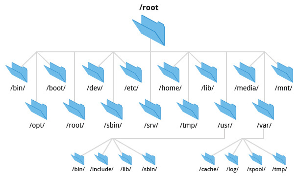

Overview
复习
- 对 I/O 设备的抽象
- 物理层 1-bit 的存储
- 设备层 I/O 设备 (寄存器)
- 驱动层 (可读/写/控制的对象)
- 块设备层 (block read/write)
本次课回答的问题
- Q: 如何使应用程序能共享存储设备？
本次课主要内容
- 文件系统需求分析
- 文件系统 API
为什么需要文件系统？
设备在应用程序之间的共享
终端
- 多个进程并行打印，如何保证不混乱？(printf-race.c)
- Unicode 字符和 Escape Code 被隔断可不是闹着玩的
- 多个进程并行读，就会发生争抢
- 谁抢到谁赢 (还算可以接受)
- 后台进程会在读终端时收到 SIGTTIN (RTFM)
GPU (CUDA)
- 每个 CUDA 应用程序都是一系列 CUDA API 的调用
- cudaMemcpy, kernel call
- 全部由设备驱动负责调度 (和隔离)
- Kernel 要等空闲 thread warp 才可以上，执行完后归还
设备在应用程序之间的共享 (cont'd)
磁盘需要支持数据的持久化
- 程序数据
- 可执行文件和动态链接库
- 应用数据 (高清图片、过场动画、3D 模型……)
- 用户数据
- 文档、下载、截图、replay……
- 系统数据
- Manpages
- 系统配置
- 让所有应用共享磁盘？一个程序 bug 操作系统就没了
文件系统：虚拟磁盘
文件系统：设计目标
- 提供合理的 API 使多个应用程序能共享数据
- 提供一定的隔离，使恶意/出错程序的伤害不能任意扩大
“存储设备 (字节序列) 的虚拟化”
- 磁盘 (I/O 设备) = 一个可以读/写的字节序列
虚拟磁盘 (文件) = 一个可以读/写的动态字节序列- 命名管理
- 虚拟磁盘的名称、检索和遍历
- 数据管理
std::vector<char>(随机读写/resize)
- 命名管理
虚拟磁盘：命名管理
怎么找到想要的虚拟磁盘？
信息的局部性：将虚拟磁盘 (文件) 组织成层次结构
利用信息的局部性组织虚拟磁盘
目录树
- 逻辑相关的数据存放在相近的目录
.
└── 学习资料
├── .学习资料(隐藏)
├── 问题求解1
├── 问题求解2
├── 问题求解3
├── 问题求解4
└── 操作系统
文件系统的 “根”
树总得有个根结点

- Windows: 每个
设备 (驱动器) 是一棵树C:\“C 盘根目录”C:\Program Files\,C:\Windows,C:\Users, ...
- 优盘分配给新的盘符
- 为什么没有
A:\,B:\? - 简单、粗暴、方便，但
game.iso一度非常麻烦……
- 为什么没有
- UNIX/Linux
- 只有一个根
/- 第二个设备呢？
- 优盘呢？？？
- 只有一个根
目录树的拼接
UNIX: 允许任意目录 “挂载 (mount)” 一个
- 非常灵活的设计
- 可以把设备挂载到任何想要的位置
- Linux 安装时的 “mount point”
/,/home,/var可以是独立的磁盘设备
mount 系统调用
int mount(const char *source, const char *target,
const char *filesystemtype, unsigned long mountflags,
const void *data);
mount /dev/sdb /mnt(RTFM)- Linux mount 工具能自动检测文件系统 (busybox 不能)
真正的 Linux 启动流程
Linux-minimal 运行在 “initramfs” 模式
- Initial RAM file system
- 完整的文件系统
- 可以包含设备驱动等任何文件 (launcher.c)
- 但不具有 “持久化” 的能力
最小 “真正” Linux 的启动流程
export PATH=/bin
busybox mknod /dev/sda b 8 0
busybox mkdir -p /newroot
busybox mount -t ext2 /dev/sda /newroot
exec busybox switch_root /newroot/ /etc/init
通过 pivot_root (2) 实现根文件系统的切换
文件的挂载
文件的挂载引入了一个微妙的循环
- 文件 = 磁盘上的虚拟磁盘
- 挂载文件 = 在虚拟磁盘上虚拟出的虚拟磁盘 🤔
Linux 的处理方式
- 创建一个 loopback (回环) 设备
- 设备驱动把设备的 read/write 翻译成文件的 read/write
- 观察 disk-img.tar.gz 的挂载
- lsblk 查看系统中的 block devices (strace)
- strace 观察挂载的流程
ioctl(3, LOOP_CTL_GET_FREE)ioctl(4, LOOP_SET_FD, 3)
Filesystem Hierarchy Standard (FHS)
FHS enables software and user to predict the location of installed files and directories.
例子：macOS 是 UNIX 的内核 (BSD), 但不遵循 Linux FHS

目录 API (系统调用)
目录管理：创建/删除/遍历
这个简单
- mkdir
- 创建一个目录
- 可以设置访问权限
- rmdir
- 删除一个空目录
- 没有 “递归删除” 的系统调用
- (应用层能实现的，就不要在操作系统层实现)
rm -rf会遍历目录，逐个删除 (试试 strace)
- getdents
- 返回
count个目录项 (ls, find, tree 都使用这个)- 以点开头的目录会被系统调用返回，只是 ls 没有显示
- 返回
更人类友好的目录访问方式
合适的 API + 合适的编程语言
from pathlib import Path
for f in Path('/proc').glob('*/status'):
print(f.parts[-2], \
(f.parent / 'cmdline').read_text() or '[kernel]')
- 这才是人类容易使用的方式
- C++17 filesystem API 那叫一个难用 😂
硬 (hard) 链接
需求：系统中可能有同一个运行库的多个版本
libc-2.27.so,libc-2.26.so, ...- 还需要一个 “当前版本的 libc”
- 程序需要链接 “
libc.so.6”，能否避免文件的一份拷贝？
- 程序需要链接 “
硬连接：允许一个文件被多个目录引用
- 目录中仅存储指向文件数据的指针
- 链接目录 ❌
- 跨文件系统 ❌
大部分 UNIX 文件系统所有文件都是硬连接 (ls -i 查看)
- 删除的系统调用称为 “unlink” (引用计数)
软 (symbolic) 链接
软链接：在文件里存储一个 “跳转提示”
- 软链接也是一个文件
- 当引用这个文件时，去找另一个文件
- 另一个文件的绝对/相对路径以文本形式存储在文件里
- 可以跨文件系统、可以链接目录、……
- 类似 “快捷方式”
- 链接指向的位置当前不存在也没关系
~/usb→/media/jyy-usb~/Desktop→/mnt/c/Users/jyy/Desktop(WSL)
ln -s 创建软链接
symlink系统调用
软链接带来的麻烦
“任意链接” 允许创建任意有向图 😂
- 允许多次间接链接
- a → b → c (递归解析)
- 可以创建软连接的硬链接 (因为软链接也是文件)
ls -i可以看到
- 允许成环
- fish.c 自动机的目录版本：fish-dir.sh
find -L A | tr -d '/'- 可以做成一个 “迷宫游戏”
- ssh 进入游戏，进入名为 end 的目录胜利
- 只允许 ls (-i), cd, pwd
- 所有处理符号链接的程序 (tree, find, ...) 都要考虑递归的情况
- fish.c 自动机的目录版本：fish-dir.sh
进程的 “当前目录”
Working/current directory
pwd命令或$PWD环境变量可以查看chdir系统调用修改- 对应 shell 中的 cd
- 注意 cd 是 shell 的内部命令
- 不存在
/bin/cd
- 不存在
问题：线程是共享 working directory, 还是各自独立持有一个？
文件 API (系统调用)
复习：文件和文件描述符
文件：虚拟的磁盘
- 磁盘是一个 “字节序列”
- 支持读/写操作
文件描述符：进程访问文件 (操作系统对象) 的 “指针”
- 通过 open/pipe 获得
- 通过 close 释放
- 通过 dup/dup2 复制
- fork 时继承
复习：mmap
使用 open 打开一个文件后
- 用
MAP_SHARED将文件映射到地址空间中 - 用
MAP_PRIVATE创建一个 copy-on-write 的副本
void *mmap(void *addr, size_t length, int prot, int flags,
int fd, off_t offset); // 映射 fd 的 offset 开始的 length 字节
int munmap(void *addr, size_t length);
int msync(void *addr, size_t length, int flags);
小问题：
- 映射的长度超过文件大小会发生什么？
- (RTFM, “Errors” section):
SIGBUS...- bus error 的常见来源 (M5)
- ftruncate 可以改变文件大小
- (RTFM, “Errors” section):
文件访问的游标 (偏移量)
文件的读写自带 “游标”，这样就不用每次都指定文件读/写到哪里了
- 方便了程序员顺序访问文件
例子
read(fd, buf, 512);- 第一个 512 字节read(fd, buf, 512);- 第二个 512 字节lseek(fd, -1, SEEK_END);- 最后一个字节- so far, so good
偏移量管理：没那么简单 (1)
mmap, lseek, ftruncate 互相交互的情况
- 初始时文件大小为 0
- mmap (
length= 2 MiB) - lseek to 3 MiB (
SEEK_SET) - ftruncate to 1 MiB
- mmap (
在任何时刻，写入数据的行为是什么？
- blog posts 不会告诉你全部
- RTFM & 做实验！
偏移量管理：没那么简单 (2)
文件描述符在 fork 时会被子进程继承。
父子进程应该共用偏移量，还是应该各自持有偏移量？
- 这决定了
offset存储在哪里
考虑应用场景
- 父子进程同时写入文件
- 各自持有偏移量 → 父子进程需要协调偏移量的竞争
- (race condition)
- 共享偏移量 → 操作系统管理偏移量
- 虽然仍然共享，但操作系统保证
write的原子性 ✅
- 虽然仍然共享，但操作系统保证
- 各自持有偏移量 → 父子进程需要协调偏移量的竞争
偏移量管理：行为
操作系统的每一个 API 都可能和其他 API 有交互 😂
- open 时，获得一个独立的 offset
- dup 时，两个文件描述符共享 offset
- fork 时，父子进程共享 offset
- execve 时文件描述符不变
O_APPEND方式打开的文件，偏移量永远在最后 (无论是否 fork)- modification of the file offset and the write operation are performed as a single atomic step
这也是 fork 被批评的一个原因
- (在当时) 好的设计可能成为系统演化过程中的包袱
- 今天的 fork 可谓是 “补丁满满”；A
fork()in the road
- 今天的 fork 可谓是 “补丁满满”；A
总结
总结
本次课回答的问题
- Q: 如何设计文件系统，使应用程序能共享存储设备？
Takeaway messages
- 文件系统的两大主要部分
- 虚拟磁盘 (文件)
- mmap, read, write, lseek, ftruncate, ...
- 虚拟磁盘命名管理 (目录树和链接)
- mount, chdir, mkdir, rmdir, link, unlink, symlink, open, ...
- 虚拟磁盘 (文件)